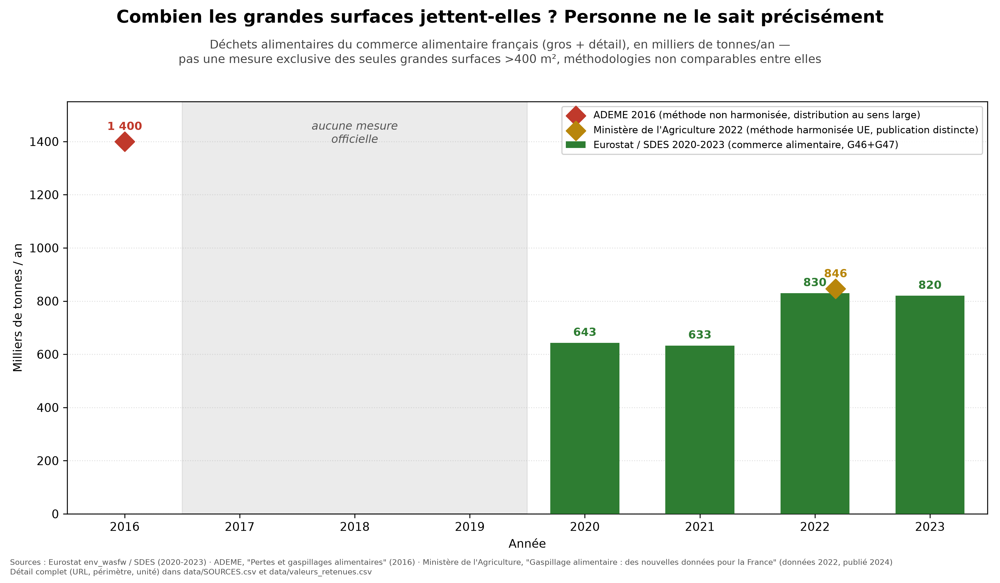
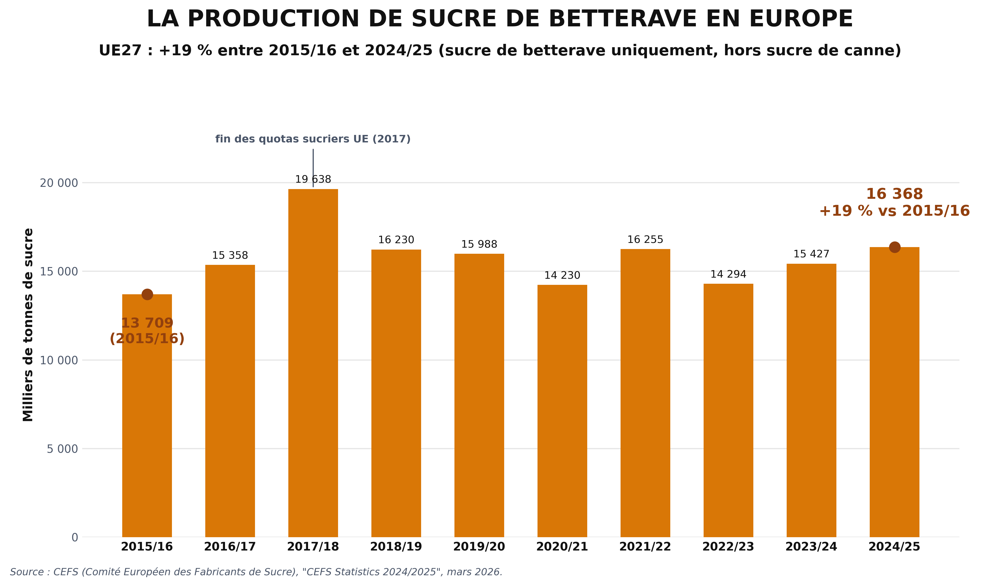

Deux constats chiffres sur l'agroalimentaire francais
Juillet 2026
Combien de nourriture les grandes surfaces francaises jettent-elles chaque annee ? Personne ne le sait precisement. C'est le premier resultat de cette etude.
Ce qu'on sait : depuis 2020, une mesure harmonisee europeenne existe. En 2023, le commerce alimentaire francais (gros + detail) a genere 820 000 tonnes de dechets alimentaires, environ 2 200 tonnes par jour.
Tout n'etait pas consommable, mais une partie de ces dechets etait encore de la nourriture.

Sources : Eurostat (env_wasfw) / SDES 2020-2023 · ADEME 2016 · Ministere de l'Agriculture (donnees 2022, publ. 2024)
Et derriere chaque tonne jetee, c'est toute la chaine en amont qui a ete mobilisee pour rien : des terres cultivees, de l'eau, des engrais, du carburant, du travail, des animaux eleves, des emissions de gaz a effet de serre.
Dans la nature, rien ne se perd. Ce qu'un etre rejette en nourrit un autre ; les oiseaux, eux, ne produisent aucun dechet.
Nous nous croyons l'espece la plus intelligente. Mais une espece vraiment intelligente jetterait-elle 820 000 tonnes de nourriture par an, sans meme savoir les compter ?
On nous parle d'urgence pour sauver la filiere betterave. En regardant les chiffres, ca ne colle pas : ils se sont trompes d'urgence. C'est celle des ecosystemes et de la biodiversite qu'il faut sauver.

Source : CEFS, « CEFS Statistics 2024/2025 », mars 2026
Sur les dix dernieres campagnes, l'UE27 a produit en moyenne 15,75 millions de tonnes de sucre de betterave par an. La production 2024/25 est meme 19 % plus haute qu'en 2015/16. Une filiere qui s'effondre, ca ne ressemble pas a ca.
Seulement 10 % de ce sucre finit dans nos assiettes. Le reste :
| Usage | Part |
|---|---|
| Alimentation directe (nos assiettes) | 10 % |
| Industrie agroalimentaire transformee (boissons, sodas, produits laitiers, confiserie) | 60 % |
| Alcool / bioethanol | 20 % |
| Chimie / pharmacie | 10 % |
Source : Cultures Sucre
Gaspillage alimentaire des grandes surfaces
Betterave sucriere et pesticides